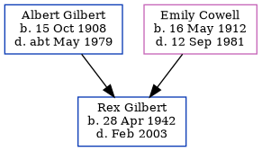

Rex Albert Frederick Gilbert 1942 - 2003
[ Home ] | [ Calendar ] | [ Surnames Index ] | [ Family History ]The older of 2 children of Albert Gilbert (a house painter) and Emily Cowell, Rex Gilbert, a cousin on the mother's side of <a href="I1.html">Nigel Horne</a>, was born in Thanet, Kent, England on Apr 28, 1942<span class="citation">1,2,3</span>.<p>He died in Thanet in Feb 2003<span class="citation">3</span>.
Parents
- Albert Edward was born on Oct 15, 1908
- Emily Edith was born on May 16, 1912
Citations
- England & Wales deaths 1837-2007 - Findmypast
- England & Wales, Birth Index: 1916-2005 Online publication - Provo, UT, USA: The Generations Network, Inc., 2008.Original data - General Register Office. England and Wales Civil Registration Indexes. London, England: General Register Office. © Crown copyright. Published by permission of the Cont
- England & Wales, Death Index: 1984-2005 Online publication - Provo, UT, USA: The Generations Network, Inc., 2007.Original data - General Register Office. England and Wales Civil Registration Indexes. London, England: General Register Office. © Crown copyright. Published by permission of the Cont
Notes
Initials were RAF because his father was in the R.A.F.
Media
England & Wales births 1837-2006 - BMD/B/1942/2/AZ/000459/125
England & Wales deaths 1837-2007 - BMD/D/2003/2/84760933
Family Tree
Generated by Ged2Site. Last updated on Jul 20, 2025